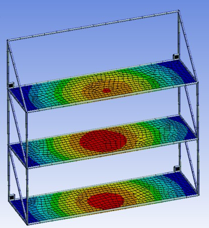
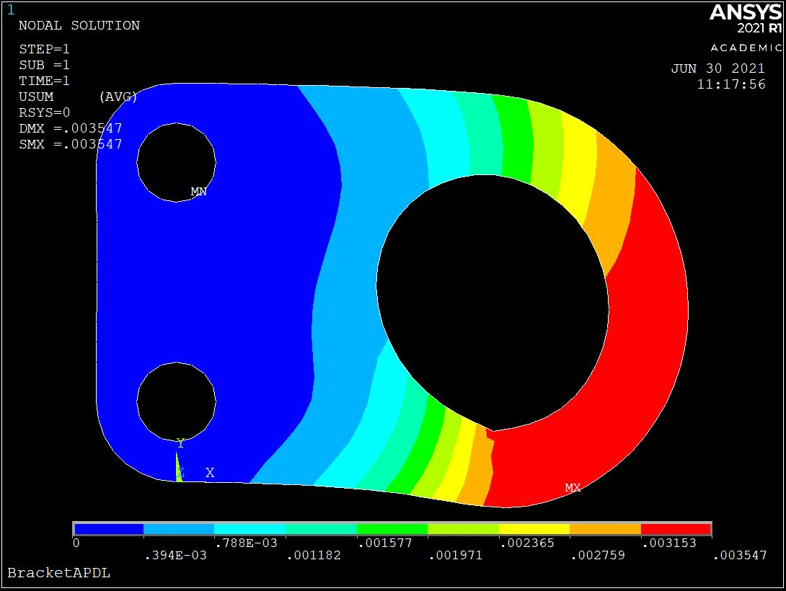
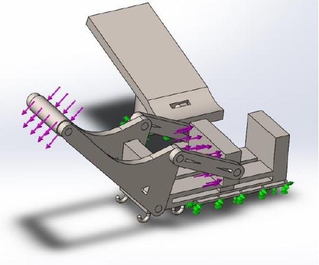

Used SolidWorks and ANSYS build-in CAD software for the design of the shelf and performed static loading analysis to identify areas where modifications were necessary to improve the overall system.
Employed an iterative approach to selecting materials and dimensions, taking into account weight and safety factors, to ensure the shelf's practicality and safety for real-world use.


Can Crusher, SFU
Conducted Finite Element Analysis (FEA) on specific components of a Can Crusher mechanism using SolidWorks.
Demonstrated strong team management and leadership abilities throughout the project.

Serial Chain Link Robotic Manipulator Design for Chess Game, SFU
Successfully designed and developed a 3DOF open serial chain link robotic manipulator (PRR) for playing an opening sequence of a chess game
Leveraged knowledge of materials, motors, and kinematics to create a feasible and realistic design
Highly skilled in DH parameters, forward kinematics, and path generation for robot control
Experience in developing inverse kinematics models, reconstructing kinematic solutions, and conducting workspace analysis
Passionate about applying expertise in mechatronics and robotics to new opportunities and challenges